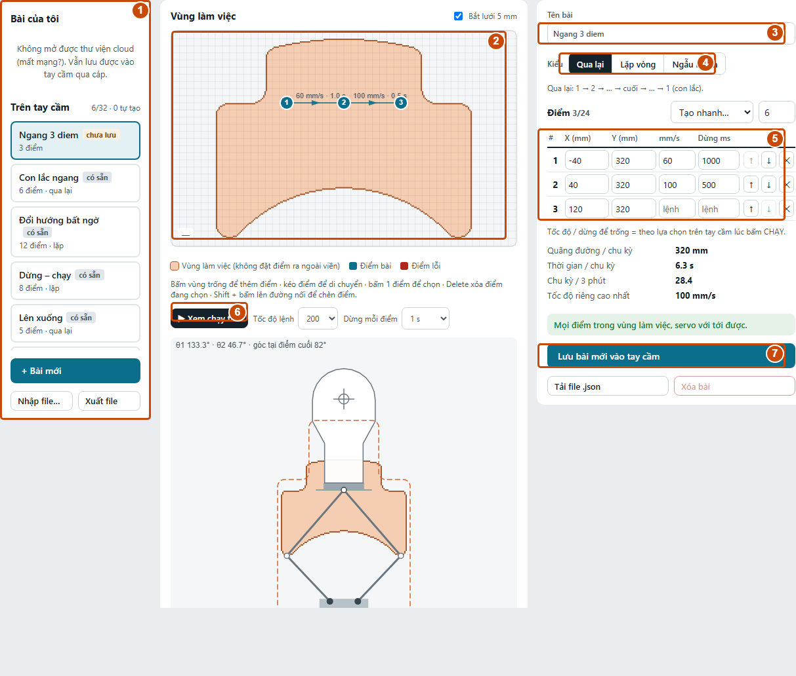

Hướng dẫn vận hành bia XY và thiết kế bài tậpHƯỚNG DẪN VẬN HÀNH BIA XYBẬT MÁY & GHÉP BIA
01 / CHUẨN BỊThao tác trực tiếp trên tay cầm cảm ứng. Bật nguồn bia và tay cầm theo bộ nguồn đã bàn giao; quan sát cơ cấu trước khi ra lệnh.
THỰC HIỆN TỪNG BƯỚC
1KIỂM TRA KHU VỰC
Đặt bia chắc chắn; kiểm tra dây nguồn và khoảng trống của cơ cấu. Không để tay hoặc vật cản trong vùng chuyển động.
2BẬT BIA VÀ TAY CẦM
Chờ tay cầm vào Tổng quan. Nếu bia đã ghép và báo trực tuyến, chuyển sang trang 2; không cần ghép lại mỗi lần bật.
3TÌM ĐÚNG BIA
Chạm Quản lý bia → TÌM BIA MỚI. Chờ danh sách xuất hiện. Chỉ dùng Nhận diện khi vùng chuyển động trống người: bia sẽ chuyển động.
4GHÉP VÀ KIỂM TRA
Chạm GHÉP ở đúng dòng bia, rồi XONG. Chọn bia vừa thêm, kiểm tra tên và trạng thái; đổi tên dễ nhớ nếu cần.
Thao tác trên tay cầm • 27/10/2026 1 / 11
HƯỚNG DẪN VẬN HÀNH BIA XYCHỌN BÀI & CHẠY THỬ
02 / CHẠY MỘT BIADùng màn Điều khiển khi cần chạy một bia. Lần đầu dùng bài mới, chọn mức tốc độ thấp đã được người phụ trách cho phép.
THỰC HIỆN TỪNG BƯỚC
1CHỌN BIA
Chạm Điều khiển, chọn đúng tên bia. Kiểm tra trạng thái trực tuyến; không chạy bia đang mất kết nối hoặc báo lỗi.
2CHỌN KỊCH BẢN
Chọn Kịch bản, rồi chọn bài trong danh sách. Quan sát hình đường chạy trên ô Mặt bia.
3ĐẶT TỐC ĐỘ
Chọn mức phù hợp. Các mốc có thể là 200 / 400 / Max tùy firmware. Không chọn Max khi mới làm quen.
4CHẠY VÀ QUAN SÁT
Kiểm tra vùng bia, chạm CHẠY; xác nhận nếu được hỏi. Quan sát bia thật có đi đúng bài và không vướng cơ cấu.
5DỪNG BIA ĐANG CHỌN
Chạm DỪNG. Quan sát bia thật đã đứng yên. Cần dừng mọi bia: dùng nút đỏ DỪNG TẤT CẢ.
Thao tác trên tay cầm • 27/10/2026 2 / 11
HƯỚNG DẪN VẬN HÀNH BIA XYBÀI CHẠY CÓ THỜI GIAN
03 / CHẠY THEO PHIÊNDùng màn Bài chạy để chọn bài, chọn các bia tham gia và thời lượng. Có thể tạm dừng, tiếp tục hoặc kết thúc phiên trên tay cầm.
THỰC HIỆN TỪNG BƯỚC
1CHỌN BÀI VÀ BIA
Mở Bài chạy. Chọn bài ở danh sách bên trái, rồi chọn các bia tham gia. Kiểm tra đúng tên và số bia.
2CHỌN THỜI LƯỢNG
Chọn thời gian mong muốn. Liên tục chạy cho tới khi chủ động dừng. Chọn cách phối hợp nếu màn hình có tùy chọn.
3BẮT ĐẦU PHIÊN
Đảm bảo các bia sẵn sàng và vùng chuyển động trống người. Chạm BẮT ĐẦU và xác nhận theo màn hình.
4TẠM DỪNG / TIẾP TỤC
Chạm TẠM DỪNG để ngưng phiên. Trước khi chạm TIẾP TỤC, kiểm tra lại vùng chuyển động của mọi bia.
5KẾT THÚC PHIÊN
Chạm DỪNG BÀI hoặc chờ hết thời gian. Kiểm tra các bia đã dừng, rồi chọn XONG · VỀ CHỌN BÀI.
Thao tác trên tay cầm • 27/10/2026 3 / 11
HƯỚNG DẪN VẬN HÀNH BIA XYDỪNG AN TOÀN & CÀI ĐẶT
04 / KẾT THÚC & TRA CỨUKhi có bất thường, ưu tiên dừng và quan sát thiết bị thật. Chỉ xử lý cơ cấu sau khi đã dừng, ngắt nguồn theo quy trình được bàn giao.
THỰC HIỆN TỪNG BƯỚC
1CẦN DỪNG NGAY
Chạm nút đỏ DỪNG TẤT CẢ ở góc dưới trái. Quan sát mọi bia. Nếu điều khiển không tác dụng, dùng biện pháp dừng nguồn đã được hướng dẫn.
2KIỂM TRA LỖI
Mở Trạng thái, đọc tên bia và thông báo lỗi. Kiểm tra nguồn, tín hiệu và vật cản. Không xóa lỗi rồi chạy lại khi chưa rõ nguyên nhân.
3CHỈNH MÀN HÌNH
Chạm bánh răng Cài đặt → Màn hình. Đặt độ sáng phù hợp; bật Giao diện tối hoặc Xoay ngược màn hình nếu cần (tay cầm 1.3.0).
4THU DỌN
Dừng bài, xác nhận mọi bia đứng yên, tắt nguồn theo quy trình. Kiểm tra dây và cơ cấu; thu gọn khi thiết bị đã hết khả năng chuyển động.
Thao tác trên tay cầm • 27/10/2026 4 / 11
THIẾT KẾ BÀI TẬP TRÊN STUDIOBẢN ĐỒ MÀN HÌNH THIẾT KẾ
05 / GIẢI THÍCH TỪNG NÚTPhần này dùng trên máy tính, trong tab Thiết kế bài tập của Studio. Soạn bài trên web, lưu hoặc gửi xuống tay cầm, rồi vận hành bia theo trang 1-4.

| NÚT / Ô / THAO TÁC | CÁCH DÙNG & KẾT QUẢ |
|---|
| 1. Danh sách bài | Bài của tôi là thư viện tài khoản cloud; Trên tay cầm là bài trên thiết bị đang nối USB hoặc thiết bị ảo khi Dùng thử. |
|---|
| 2. Khung vẽ | Bấm để thêm, kéo để dời điểm, Shift + bấm đường nối để chèn. Vùng màu cam là vùng đặt điểm hợp lệ. |
|---|
| 3. Tên bài · 4. Kiểu | Đặt tên và chọn cách chạy. Chọn bài có sẵn thì dùng Nhân bản để sửa trước. |
|---|
| 5. Bảng điểm | Nhập tọa độ X/Y, tốc độ và thời gian dừng riêng; đổi thứ tự hoặc xóa từng điểm. |
|---|
| 6. Chạy thử · 7. Lưu | Chạy thử là mô phỏng. Nút Lưu thay đổi tên theo nơi lưu; đọc kỹ trước khi bấm. |
|---|
Thiết kế trên Studio • 27/10/2026 5 / 11
THIẾT KẾ BÀI TẬP TRÊN STUDIOTẠO BÀI & CHỌN KIỂU
06 / GIẢI THÍCH TỪNG NÚTBắt đầu bằng + Bài mới hoặc chọn một bài để sửa. Đặt tên ngắn, chọn kiểu, rồi tạo điểm bằng mẫu hoặc bằng tay.
| NÚT / Ô / THAO TÁC | CÁCH DÙNG & KẾT QUẢ |
|---|
| + Bài mới | Mở bài trắng; không tự lưu. Nếu bài hiện tại có thay đổi chưa lưu, đọc hộp nhắc trước khi chuyển. |
|---|
| Tên bài | Nhập tên dễ phân biệt, ví dụ Ngang 3 diem. Ô giới hạn 30 ký tự; khi lưu còn kiểm tra tối đa 39 byte UTF-8, nên tên có dấu dài vẫn có thể bị từ chối. |
|---|
| Qua lại | Đi lần lượt từ điểm đầu tới cuối, rồi quay ngược qua các điểm cũ. Ví dụ 1 → 2 → 3 → 2 → 1. |
|---|
| Lặp vòng | Đi 1 → 2 → 3 → 1 và lặp lại. Cần kiểm tra cả đoạn nối từ điểm cuối về điểm đầu. |
|---|
| Ngẫu nhiên | Bia tự chọn điểm trong vùng chạy; bảng điểm bị ẩn. Không phải mẫu tạo các điểm ngẫu nhiên cố định. Không lưu kiểu này lên cloud; không có Xem chạy thử theo bảng điểm. |
|---|
| Tạo nhanh… + ô số điểm | Đặt số từ 2 đến 24 trước, rồi chọn mẫu. Nếu đã có điểm, phải xác nhận thay toàn bộ. Mẫu mới để tốc độ/dừng theo lệnh; kiểm tra lại sau tạo. |
|---|
| Đường ngang / Đường dọc | Tạo số điểm đã chọn thành hàng ngang hoặc dọc. Trình tạo tự chuyển kiểu bài thành Qua lại. |
|---|
| Vòng tròn / Zích zắc | Tạo số điểm đã chọn theo mẫu, tự chuyển thành Lặp vòng. Vòng tròn là chuỗi đoạn thẳng giữa các điểm, không phải đường cong liên tục. |
|---|
| Hình chữ nhật | Tạo đúng 4 góc, không theo số điểm đang nhập; tự chuyển thành Lặp vòng. |
|---|
| Tạo nhanh → Ngẫu nhiên | Sinh danh sách điểm ngẫu nhiên cố định; tự chọn Lặp vòng. Khác nút Kiểu → Ngẫu nhiên: ở đây vẫn có bảng điểm, sửa và lưu được. |
|---|
Thiết kế trên Studio • 27/10/2026 6 / 11
THIẾT KẾ BÀI TẬP TRÊN STUDIOVẼ & SỬA TỪNG ĐIỂM
07 / GIẢI THÍCH TỪNG NÚTMỗi bài tối đa 24 điểm. Tọa độ tính bằng mm; các điểm phải nằm trong vùng làm việc và cơ cấu phải với tới được.
| NÚT / Ô / THAO TÁC | CÁCH DÙNG & KẾT QUẢ |
|---|
| Bắt lưới 5 mm | Bật: điểm thêm/kéo trên khung vẽ được làm tròn theo lưới 5 mm. Tắt để đặt tự do hơn. Không nhầm với bước dịch bằng bàn phím. |
|---|
| Bấm vùng trống | Thêm điểm vào cuối danh sách. Khi đủ 24 điểm, không thêm được nữa. Vùng ngoài biên bị chặn hoặc báo lý do. |
|---|
| Bấm / kéo điểm | Bấm để chọn; kéo để thay vị trí. Điểm đang chọn được tô nổi bật; nhả chuột để chốt tọa độ. |
|---|
| Shift + bấm đường nối | Chèn điểm vào đoạn đang bấm thay vì thêm ở cuối. Dùng khi muốn bổ sung một mốc giữa hai điểm cũ. |
|---|
| X (mm) / Y (mm) | Nhập trực tiếp tọa độ ngang X và tọa độ dọc Y. Dấu âm có ý nghĩa vị trí, không tự bỏ. Tọa độ không hợp lệ sẽ bị cảnh báo hoặc trả về giá trị cũ. |
|---|
| mm/s | Tốc độ riêng để đi tới điểm đó: 5-400 mm/s. Để trống = theo tốc độ lệnh chọn trên tay cầm lúc chạy. Không nhập Max vào ô số. |
|---|
| Dừng ms | Thời gian dừng sau khi tới điểm: 1000 = 1 giây; tối đa 60000 ms. Để trống = theo lệnh chạy; nhập 0 = không dừng tại điểm đó. |
|---|
| ↑ / ↓ trong dòng điểm | Đưa dòng lên hoặc xuống một vị trí, làm đổi thứ tự đường chạy. Đây không phải lệnh dịch bia lên/xuống. |
|---|
| Nút X trong dòng điểm | Xóa đúng điểm ở dòng đó. Số thứ tự các điểm sau tự cập nhật; đường nối cũng thay đổi. |
|---|
| Delete / Backspace | Khi điểm đang được chọn và không gõ trong ô nhập, xóa điểm đó. Nếu con trỏ đang ở ô số/tên, phím dùng để sửa nội dung ô. |
|---|
| Phím mũi tên | Dịch điểm chọn 1 mm mỗi lần; giữ Shift để dịch 10 mm. Bấm ra khỏi ô nhập trước khi dùng phím tắt. |
|---|
Thiết kế trên Studio • 27/10/2026 7 / 11
THIẾT KẾ BÀI TẬP TRÊN STUDIOCHẠY THỬ & ĐỌC KẾT QUẢ
08 / GIẢI THÍCH TỪNG NÚTXem chạy thử chỉ mô phỏng chuyển động trên trang, không gửi lệnh cho bia thật. Bài mới cần được kiểm tra trên thiết bị ở tốc độ phù hợp sau khi lưu.
| NÚT / Ô / THAO TÁC | CÁCH DÙNG & KẾT QUẢ |
|---|
| Xem chạy thử | Bắt đầu mô phỏng bài Qua lại/Lặp vòng có ít nhất 2 điểm. Đọc vị trí chạy trên bản đồ và cơ cấu 5 khâu bên dưới. |
|---|
| Dừng chạy thử | Xuất hiện khi mô phỏng đang chạy. Bấm để dừng mô phỏng; không phải lệnh dừng bia thật. |
|---|
| Tốc độ lệnh | Chọn 200 / 400 / Max làm tốc độ mô phỏng cho điểm không có tốc độ riêng. Ô này không thay đổi cài đặt chạy trên tay cầm. |
|---|
| Dừng mỗi điểm | Chọn Không / 1 s / 2 s cho các điểm có Dừng ms để trống. Giá trị riêng của từng điểm được ưu tiên. Muốn xem theo thông số mới, dừng rồi chạy thử lại. |
|---|
| Hình cơ cấu bên dưới | Minh họa tư thế cơ cấu 5 khâu khi di chuyển. Dùng để phát hiện đường khó hiểu; không chứng minh cơ cấu thật đã lắp hoặc hiệu chuẩn đúng. |
|---|
| Quãng đường / chu kỳ | Tổng chiều dài các đoạn trong một lượt đầy đủ theo kiểu bài đã chọn; Lặp vòng tính cả đoạn quay về điểm đầu. |
|---|
| Thời gian / chu kỳ | Ước tính từ quãng đường, tốc độ và thời gian dừng. Tốc độ lấy riêng ở điểm đích nếu có; nếu không lấy từ Tốc độ lệnh. |
|---|
| Chu kỳ / 3 phút | Ước tính số chu kỳ trong 180 giây theo mô phỏng; không phải cài đặt thời lượng phiên trên tay cầm. |
|---|
| Tốc độ riêng cao nhất | Giá trị lớn nhất trong các ô mm/s; nếu tất cả để trống thì báo theo lệnh. Không phải tốc độ thực đo được của bia. |
|---|
| Thông báo xanh / đỏ | Xanh: các điểm qua kiểm tra vùng và cơ cấu. Đỏ: đọc số điểm và lý do; sửa trước khi lưu. Thông báo Chưa đặt tên/Cần ít nhất 2 điểm nhắc phần còn thiếu. |
|---|
Thiết kế trên Studio • 27/10/2026 8 / 11
THIẾT KẾ BÀI TẬP TRÊN STUDIOLƯU BÀI: ĐÚNG NƠI, ĐÚNG NÚT
09 / GIẢI THÍCH TỪNG NÚTNhãn nút phụ thuộc bài đang mở, đăng nhập cloud và kết nối thiết bị. Luôn đọc chữ trên nút: lưu trên cloud và lưu trên tay cầm là hai nơi khác nhau.
| NÚT / Ô / THAO TÁC | CÁCH DÙNG & KẾT QUẢ |
|---|
| Bài của tôi | Chọn bài trong danh sách này để sửa bài trên tài khoản cloud. Cần đăng nhập; bài trên cloud chưa tự xuất hiện trên tay cầm. |
|---|
| Trên tay cầm | Chọn để mở bài của tay cầm kết nối USB. Nếu đang Dùng thử, đây là bộ nhớ ảo mất khi tải lại trang. |
|---|
| Lưu bài mới vào tay cầm / Lưu vào tay cầm | Lưu bài mới hoặc cập nhật bài đang mở trên thiết bị. Cần kết nối đúng tay cầm thật qua USB nếu muốn giữ trên thiết bị thật. |
|---|
| Lưu vào Bài của tôi / Lưu | Với bài cloud hoặc bài mới khi đã đăng nhập, nút chính lưu vào tài khoản cloud. Đây không phải lệnh gửi USB. |
|---|
| Lưu thành bài mới | Tạo bản riêng, không ghi đè bài gốc. Nếu bài đã có tên, bản sao vẫn có thể cùng tên: nên đổi tên để dễ phân biệt. |
|---|
| Nhân bản để sửa | Dùng cho bài có sẵn bị khóa. Lần bấm đầu tạo bản có thể chỉnh và thêm hậu tố (bản sao); sau đó sửa tên/nội dung rồi bấm Lưu. |
|---|
| Chép vào Bài của tôi | Hiện khi mở bài thiết bị và đã đăng nhập. Tạo bản cloud của bài đang mở; không xóa hay chuyển bài gốc khỏi tay cầm. |
|---|
| Gửi xuống tay cầm (USB) | Hiện khi mở bài cloud và có kết nối thiết bị. Thêm thành bài mới trên tay cầm; bài cloud vẫn giữ nguyên. Kiểm tra danh sách Trên tay cầm sau gửi. |
|---|
| Nút bị mờ hoặc không thấy | Có thể do chưa kết nối/chưa đăng nhập, bài chưa thay đổi, bài có sẵn bị khóa, hoặc chức năng không phù hợp nguồn bài. Kiểm tra nơi mở bài và nhãn nút. |
|---|
Thiết kế trên Studio • 27/10/2026 9 / 11
THIẾT KẾ BÀI TẬP TRÊN STUDIONHẬP, XUẤT & XÓA BÀI
10 / GIẢI THÍCH TỪNG NÚTJSON dùng để sao lưu hoặc chuyển bài giữa máy. Tải được file không có nghĩa bài đã được ghi vào thiết bị; cần thực hiện Lưu/Gửi/Đồng bộ riêng.
| NÚT / Ô / THAO TÁC | CÁCH DÙNG & KẾT QUẢ |
|---|
| Tải file .json | Ở bên phải: tải riêng bài đang mở, gồm tên, kiểu, các điểm và thông số. Có thể tải bản đang chỉnh để sao lưu trước khi sửa tiếp. |
|---|
| Xuất file | Ở dưới danh sách bên trái: nếu đã đăng nhập và cloud có bài, xuất toàn bộ Bài của tôi; nếu không, xuất các bài tự tạo của thiết bị đang nối. Không xuất 6 bài có sẵn theo nhánh thiết bị. |
|---|
| Nhập file…: một bài | Chọn file JSON chứa đúng một bài: trang mở nó như bài mới, chưa ghi vào nơi lưu. Kiểm tra tên/điểm rồi bấm Lưu. |
|---|
| Nhập file…: nhiều bài | Nếu đã đăng nhập, nhập thành bài mới vào cloud; nếu chưa đăng nhập, cần nối thiết bị để nhập vào tay cầm. Đọc hộp xác nhận và kết quả đã nhập bao nhiêu bài. |
|---|
| Xóa bài | Với bài trên thiết bị: xóa khỏi tay cầm; bài phía sau dịch lên. Bài có sẵn không xóa được. Xuất JSON trước nếu còn cần bản sao. |
|---|
| Xóa khỏi Bài của tôi | Xóa khỏi cloud và danh sách nạp của các tay cầm. Bài đã tải trên thiết bị vẫn còn tới lần đồng bộ sau; không tự xóa tức thì trên mọi thiết bị. |
|---|
| Chuyển bài sang tay cầm bằng WiFi | Lưu bài vào Bài của tôi → tab Đồng bộ → chọn tay cầm → tick bài → Lưu danh sách. Trên tay cầm vào Cài đặt → Đồng bộ → ĐỒNG BỘ NGAY. |
|---|
| DỪNG TẤT CẢ trên thanh web | Là lệnh dừng thật nếu Studio đang nối thiết bị thật; khác Dừng chạy thử. Khi làm bài mới, không cần cho bia thật chạy để xem mô phỏng. |
|---|
Thiết kế trên Studio • 27/10/2026 10 / 11
THIẾT KẾ BÀI TẬP TRÊN STUDIOVÍ DỤ: BÀI NGANG 3 ĐIỂM
11 / GIẢI THÍCH TỪNG NÚTMẫu minh họa để hiểu tốc độ/dừng riêng. Đối chiếu vùng chạy của bia thực trước khi dùng; không coi tọa độ ví dụ là phù hợp mọi cơ cấu.
| NÚT / Ô / THAO TÁC | CÁCH DÙNG & KẾT QUẢ |
|---|
| 1. Tạo và đặt tên | + Bài mới → Tên bài: Ngang 3 diem → Kiểu: Qua lại. Giữ bài cũ nếu còn cần trước khi tạo bài mới. |
|---|
| 2. Thêm 3 điểm | Bấm 3 vị trí trong vùng hoặc dùng Tạo nhanh → Đường ngang với số điểm 3. Nhập lại tọa độ trong bảng nếu cần. |
|---|
| 3. Điểm 1 | X = -40; Y = 320; mm/s = 60; Dừng ms = 1000. Khi tới điểm 1, dùng tốc độ riêng 60 mm/s và dừng 1 giây. |
|---|
| 4. Điểm 2 | X = 40; Y = 320; mm/s = 100; Dừng ms = 500. Khi tới điểm 2, dùng 100 mm/s và dừng nửa giây. |
|---|
| 5. Điểm 3 | X = 120; Y = 320; để trống mm/s và Dừng ms. Tốc độ/dừng của điểm 3 sẽ theo lệnh chạy; không tự sao chép giá trị điểm 2. |
|---|
| 6. Kiểm tra mô phỏng | Tốc độ lệnh = 200; Dừng mỗi điểm = 1 s → Xem chạy thử. Trình tự Qua lại: 1 → 2 → 3 → 2 → 1; kiểm tra nhịp dừng và vùng chạy. |
|---|
| 7. Lưu đúng nơi | Nếu muốn vào thiết bị ngay: kết nối USB, đọc nút lưu hoặc dùng Gửi xuống tay cầm (USB). Nếu lưu cloud, thực hiện gửi/đồng bộ riêng. |
|---|
| 8. Chạy trên tay cầm | Chọn đúng bia và bài vừa lưu, chọn tốc độ phù hợp, kiểm tra vùng chuyển động rồi chạy thử thực tế. DỪNG khi có bất thường. |
|---|
| 9. Giữ bản sao | Tải file .json sau khi hoàn thiện. Đặt tên file dễ nhận biết để lần sau nhập lại hoặc chuyển máy. |
|---|
Thiết kế trên Studio • 27/10/2026 11 / 11